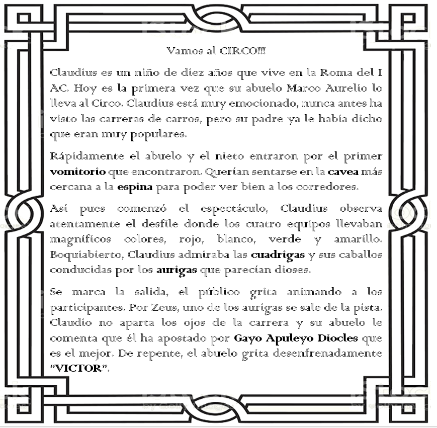
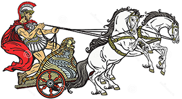
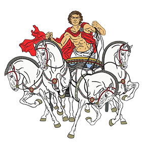
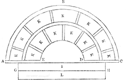
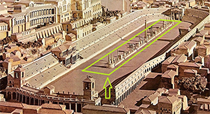
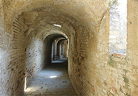

Vamos al CIRCO!!!
.
Glosario
Auriga (n)
|  | Era quien debía conducir la biga o cuádriga, vehículo ligero tirado por dos caballos, que era el medio de transporte de algunos romanos. |
Cuádriga
|  | Era un tipo de carro tirado por cuatro caballos en línea. |
Cavea
|  | Hileras concéntricas que forman las gradas del circo romano. |
Espina
|  | Es un muro de 4-6 metros de alto colocado en medio del circo de los antiguos, al que se le daba vueltas alrededor hasta completar la carrera. |
Vomitorio
|  | Es un pasillo situado debajo o detrás de una grada de un anfiteatro o un estadio, por el que grandes multitudes pueden salir rápidamente al acabar el espectáculo. |